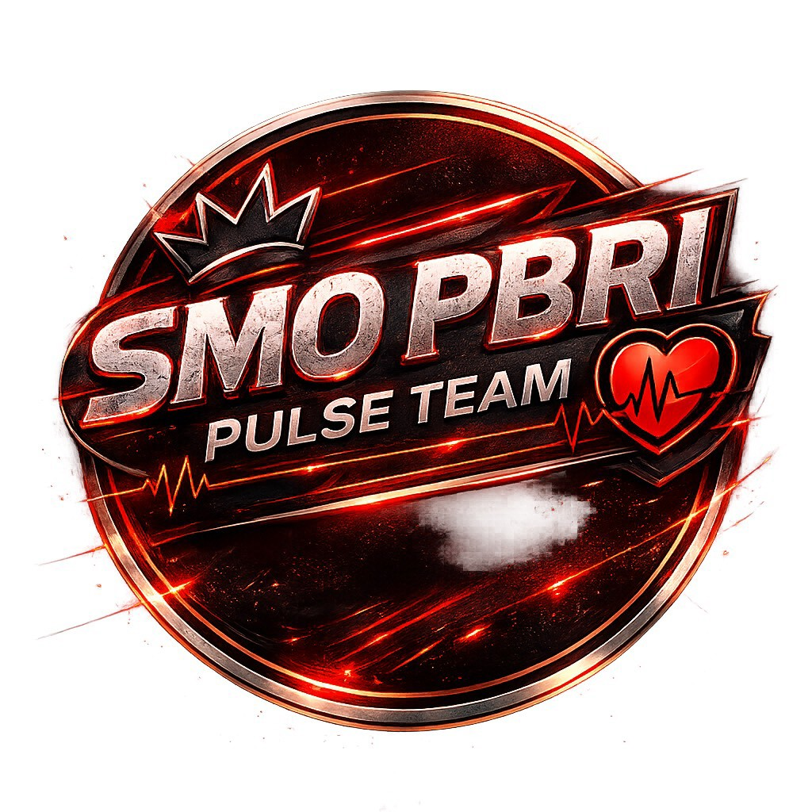

"ชีพจรแห่งผู้นำ สร้างคุณค่า พัฒนานักศึกษา เพื่อสถาบันและสังคม"
ทุกจังหวะชีพจรของบรม คือ เสียงที่เราพร้อมรับฟังและเคียงข้าง
"Every beat of PBRI's pulse is a voice we are ready to listen to and stand by"
SMO PBRI PULSE TEAM คือทีมผู้นำนักศึกษาของสถาบันพระบรมราชชนก ผู้เป็น “ชีพจร” ขององค์กร ขับเคลื่อนทุกกิจกรรมด้วยหัวใจแห่งการรับใช้ ภาวะผู้นำ ความคิดสร้างสรรค์ และความสามัคคี เพื่อสร้างคุณค่าแก่เพื่อนนักศึกษา สถาบัน และสังคม
SMO PBRI PULSE TEAM is the student leadership team of the Praboromarajchanok Institute, serving as the "pulse" of the organization. Driven by a spirit of service, leadership, creativity, and unity, the team aims to create meaningful value for fellow students, the institute, and society as a whole.